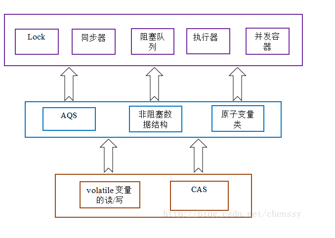
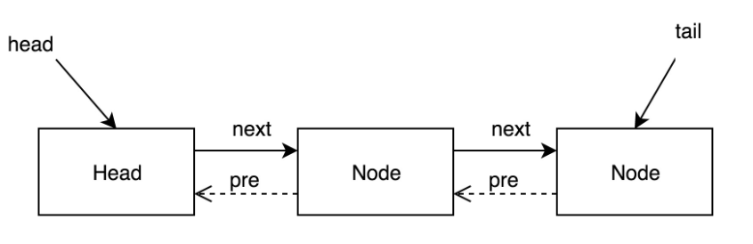
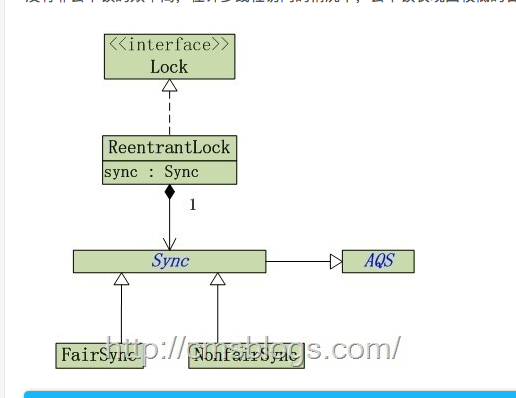
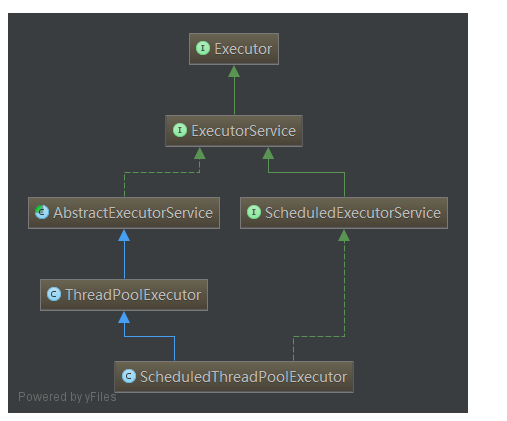
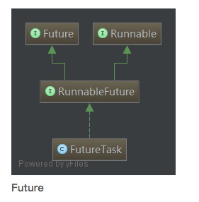

[toc]
Java Concurrent Package API
Synchronized
1
2
3
4
5
6
7
8public class Test {
public void test() {
synchronized (this) {
//do nothing
}
}
}
1
2
3
4
5
6
7
8
9
10
11
12
13
14
15
16
17
18
19
20
21
22public top.yifan.synchronizedDemos.Test();
Code:
0: aload_0
1: invokespecial #1 // Method java/lang/Object."<init>":()V
4: return
public void test();
Code:
0: aload_0
1: dup
2: astore_1
3: monitorenter
4: aload_1
5: monitorexit
6: goto 14
9: astore_2
10: aload_1
11: monitorexit
12: aload_2
13: athrow
14: return
Exception table:
可以看到synchronized 由monitorenter和monitorexit 控制， 这确保只有一个线程可以访问critical section
JUC结构

AQS (abstractQueuedSynchronizer)
这是一个framework,被N多java concurrent API 调用 先看官方解释
1
2
3* Provides a framework for implementing blocking locks and related
* synchronizers (semaphores, events, etc) that rely on
* first-in-first-out (FIFO) wait queues.
给同步器提供一个fifo的队列
This class is designed to be a useful basis for most kinds of synchronizers that rely on a single atomic {@code int} value to represent state.
同步器依赖单个的原子变量，如countDownLatch
Latch (闭锁）
- 确保所有资源都初始化后再执行thread
- 确保某个服务在其依赖的服务都启动后再执行
- 等待某个操作的所有参与者都准备就绪后再执行
latch就是阀门的意思，门没打开前，所有线程都将等待
CountDownLatch
使一个或多个线程等待一组事件发生 包括一个计数器，初始化是一个正数表示需要等待的event数量
countDown递减计数器，await方法等待计数器达到0
来看源代码 A synchronization aid that allows one or more threads to wait until a set of operations being performed in other threads completes.
This is a one-shot phenomenon -- the count cannot be reset. If you need a version that resets the count, consider using a {@link CyclicBarrier}.
CountDownLatch是通过一个计数器来实现的，当我们在new 一个CountDownLatch对象的时候需要带入该计数器值，该值就表示了线程的数量。每当一个线程完成自己的任务后，计数器的值就会减1。当计数器的值变为0时，就表示所有的线程均已经完成了任务，然后就可以恢复等待的线程继续执行了。
虽然，CountDownlatch与CyclicBarrier有那么点相似，但是他们还是存在一些区别的：
CountDownLatch的作用是允许1或N个线程等待其他线程完成执行；而CyclicBarrier则是允许N个线程相互等待
CountDownLatch的计数器无法被重置；CyclicBarrier的计数器可以被重置后使用，因此它被称为是循环的barrier
自旋尝试获取state
await
1
2
3
4
5
6
7
8
9
10
11
12
13
14
15
16
17
18
19
20
21
22
23
24
25
26
27
28
29private void doAcquireSharedInterruptibly(int arg)
throws InterruptedException {
final Node node = addWaiter(Node.SHARED);
boolean failed = true;
try {
for (;;) {
final Node p = node.predecessor();
if (p == head) {
/**
* 对于CountDownLatch而言，如果计数器值不等于0，那么r 会一直小于0
*/
int r = tryAcquireShared(arg);
if (r >= 0) {
setHeadAndPropagate(node, r);
p.next = null; // help GC
failed = false;
return;
}
}
//等待
if (shouldParkAfterFailedAcquire(p, node) &&
parkAndCheckInterrupt())
throw new InterruptedException();
}
} finally {
if (failed)
cancelAcquire(node);
}
}
countDown()
1
2
3
4
5
6
7
8
9
10
11
12
13
14protected boolean tryReleaseShared(int releases) {
for (;;) {
//获取锁状态
int c = getState();
//c == 0 直接返回，释放锁成功
if (c == 0)
return false;
//计算新“锁计数器”
int nextc = c-1;
//更新锁状态（计数器）
if (compareAndSetState(c, nextc))
return nextc == 0;
}
}
Unsafe instances
锁不一致
1
2
3
4
5
6
7
8
9
10
11
12public class ListHelper<E> {
public List<E> list = Collections.synchronizedList(new ArrayList<>());
//list 上的锁 不是listHelper上的锁，所以putIfAbsent相对于list其它的操作并不是thread-safe
public synchronized boolean putIfAbsent(E x) {
boolean absent = !list.contains(x);
if (absent) {
list.add(x);
}
return absent;
}
}
更改很简单
1
2
3
4
5
6
7
8
9
10
11
12
13
14public class ListHelper<E> {
public List<E> list = Collections.synchronizedList(new ArrayList<>());
//list 上的锁 不是listHelper上的锁，所以putIfAbsent相对于list其它的操作并不是thread-safe
public boolean putIfAbsent(E x) {
synchronized(list) {
boolean absent = !list.contains(x);
if (absent) {
list.add(x);
}
return absent;
}
}
}
更好的做法是学习synchronizedCollections 对每一个方法都加锁
1
2
3
4
5
6
7
8
9
10
11
12
13
14
15
16
17
18
19
20
21
22
23
24
25
26
27
28
29
30
31
32
33
34
35
36
37
38
39
40
41
42
43
44
45
46
47
48
49
50
51
52
53
54
55
56
57
58
59
60
61
62
63
64
65
66
67
68
69
70
71
72
73
74
75
76
77
78
79
80
81
82
83
84
85
86static class SynchronizedCollection<E> implements Collection<E>, Serializable {
private static final long serialVersionUID = 3053995032091335093L;
final Collection<E> c; // Backing Collection
final Object mutex; // Object on which to synchronize
SynchronizedCollection(Collection<E> c) {
this.c = Objects.requireNonNull(c);
mutex = this;
}
SynchronizedCollection(Collection<E> c, Object mutex) {
this.c = Objects.requireNonNull(c);
this.mutex = Objects.requireNonNull(mutex);
}
public int size() {
synchronized (mutex) {return c.size();}
}
public boolean isEmpty() {
synchronized (mutex) {return c.isEmpty();}
}
public boolean contains(Object o) {
synchronized (mutex) {return c.contains(o);}
}
public Object[] toArray() {
synchronized (mutex) {return c.toArray();}
}
public <T> T[] toArray(T[] a) {
synchronized (mutex) {return c.toArray(a);}
}
public Iterator<E> iterator() {
return c.iterator(); // Must be manually synched by user!
}
public boolean add(E e) {
synchronized (mutex) {return c.add(e);}
}
public boolean remove(Object o) {
synchronized (mutex) {return c.remove(o);}
}
public boolean containsAll(Collection<?> coll) {
synchronized (mutex) {return c.containsAll(coll);}
}
public boolean addAll(Collection<? extends E> coll) {
synchronized (mutex) {return c.addAll(coll);}
}
public boolean removeAll(Collection<?> coll) {
synchronized (mutex) {return c.removeAll(coll);}
}
public boolean retainAll(Collection<?> coll) {
synchronized (mutex) {return c.retainAll(coll);}
}
public void clear() {
synchronized (mutex) {c.clear();}
}
public String toString() {
synchronized (mutex) {return c.toString();}
}
// Override default methods in Collection
@Override
public void forEach(Consumer<? super E> consumer) {
synchronized (mutex) {c.forEach(consumer);}
}
@Override
public boolean removeIf(Predicate<? super E> filter) {
synchronized (mutex) {return c.removeIf(filter);}
}
@Override
public Spliterator<E> spliterator() {
return c.spliterator(); // Must be manually synched by user!
}
@Override
public Stream<E> stream() {
return c.stream(); // Must be manually synched by user!
}
@Override
public Stream<E> parallelStream() {
return c.parallelStream(); // Must be manually synched by user!
}
private void writeObject(ObjectOutputStream s) throws IOException {
synchronized (mutex) {s.defaultWriteObject();}
}
}
ConcurrentMap
采用了分段锁，一种更细粒度的加锁机制 （locking striping)
Concurrent带来更高的吞吐量，单线程情况下只牺牲了很小的性能
ConcurrentMap的iterator不会抛出ConcurrentModificationException
只有程序需要独占map时才放弃concurrentMap
详情请阅读另一篇java collections详解
ConcurrentModificationException
如果容器在迭代的过程中被其他线程修改了，会抛出这个异常
可以克隆容器，将迭代在副本上进行 克隆过程仍然需要加锁
参考copyonwriteCollections系列
Operating System
- 为各个独立执行的进程分配各种资源包括内存，文件句柄，安全证书等
- 不同进程之间可以进行粗粒度的通信，socket, signal processor, shared memory, 信号量和文件
Thread
https://blog.csdn.net/u012398362/article/details/51475213
- 线程会共享进程范围内的资源，内存句柄，文件句柄
- 线程有各自的程序计数器，stack和局部变量（一组寄存器 存local variables)
- 同一个程序的多个thread可以被同时调度到多个cpu上运行
- 线程也被称为轻量级进程 是最基本的调度单元
- 进程是系统分配资源的基本单位，线程时调度CPU的基本单位
- 线程间的切换代价要比进程切换的代价小
thread security
- 对共享的 shared 和mutable可变的 状态进行管理
三种同步方式
- 不在线程之间共享该状态 threadlocal
- 将状态变量改为不可变 final
- 访问时 使用同步机制 synchronized
NIO
non-blocking i/o复杂性远远大于 i/o 即使客户端很多，在很多平台线程创建上限也很高，完全可以让每个客户端都拥有一个自己的线程
所以netty并不一定适合所有的系统
Context Switch （上下文切换）
当线程调度器临时挂起活跃线程并转而运行另一个线程时，就会频繁地出现上下文切换操作，这种操作将带来极大的开销 保存和恢复上下文使cpu花更多的时间在线程调度上。
同步机制
当线程共享数据时，必须使用同步机制，这些机制会抑制某些编译器的油画，使内存缓存区中的数据无效，以及增加共享内存总线的同步流量
一个线程只能在一个cpu socket上运行？？ 这句是对的 出自《java并发实战》 jvm能不能够将单个线程安排到不同的cpu上去运行呢？ 不可以 jvm可以把多个线程安排到多个cpu上
在具有多个处理器的机器上，每一个处理器运行一个线程，可以有多个线程并行运行。当然，如果线程的数目多于处理器的数目，调度器依然采用时间片机制
intrinsic lock
每一个java object都可以用作一个实现同步的锁 这种锁称为内置锁或者monitor lock
sychronized (lock) {
}
private lock
1
2
3
4
5
6
7
8
9
10public class PrivateLock {
private final Object myLock = new Object();
Object widget;
void someMethod() {
synchronized (myLock) {
// visit widget
}
}
}
java synchronizedCollection也使用了 monitor pattern 优点 封装了锁，客户代码无法通过共有方法获取到lock
volatile
- volatile声明的变量不会被缓存到寄存器中，简而言之，就是volatitle变量的load一定会去main memory中查询
- volatile禁止了重排序
- 不保证同步
- 只能保证可见性，lock还可以保证原子性
publish and escape
有点看不懂...
线程封闭 threadlocal
ThreadLocal<T> 可以被视为 Map<Thread, T>
final and Private
除非需要某个field是mutable的 否则都声明为final 除非需要更高的可见性，否则应将所有field都声明为private
CAS-compareAndSwapInt
Unsafe中有一个method compareAndSwapInt 实现的是无锁同步的机制 我们看下它是如何实现的
1
2
3
4
5
6
7
8
9
10
11
12
13
14
15
16
17
18
19
20
21/***
* Compares the value of the integer field at the specified offset
* in the supplied object with the given expected value, and updates
* it if they match. The operation of this method should be atomic,
* thus providing an uninterruptible way of updating an integer field.
* 在obj的offset位置比较integer field和期望的值，如果相同则更新。这个方法
* 的操作应该是原子的，因此提供了一种不可中断的方式更新integer field。
*
* @param obj the object containing the field to modify.
* 包含要修改field的对象
* @param offset the offset of the integer field within <code>obj</code>.
* <code>obj</code>中整型field的偏移量
* @param expect the expected value of the field.
* 希望field中存在的值
* @param update the new value of the field if it equals <code>expect</code>.
* 如果期望值expect与field的当前值相同，设置filed的值为这个新值
* @return true if the field was changed.
* 如果field的值被更改
*/
public final native boolean compareAndSwapInt(Object var1, long var2, int var4, int var5);
调用了JNI，也就是说有对应的unsafe.cpp的接口 如下：
1
2
3
4
5
6
7
8
9UNSAFE_ENTRY(jboolean, Unsafe_CompareAndSwapInt(JNIEnv *env, jobject unsafe, jobject obj, jlong offset, jint e, jint x))
UnsafeWrapper("Unsafe_CompareAndSwapInt");
oop p = JNIHandles::resolve(obj);
//获取对象的变量的地址
jint* addr = (jint *) index_oop_from_field_offset_long(p, offset);
//调用Atomic操作
//进入atomic.hpp,大意就是先去获取一次结果，如果结果和现在不同，就直接返回，因为有其他人修改了；否则会一直尝试去修改。直到成功。
return (jint)(Atomic::cmpxchg(x, addr, e)) == e;
UNSAFE_END
再来看atomic::cmpxchg这个方法实现，这是一个c++的库
1
2
3
4
5
6
7
8
9
10
11
12
13
14
15
16
17
18
19jbyte Atomic::cmpxchg(jbyte exchange_value, volatile jbyte* dest, jbyte compare_value) {
assert(sizeof(jbyte) == 1, "assumption.");
uintptr_t dest_addr = (uintptr_t)dest;
uintptr_t offset = dest_addr % sizeof(jint);
volatile jint* dest_int = (volatile jint*)(dest_addr - offset);
jint cur = *dest_int;
jbyte* cur_as_bytes = (jbyte*)(&cur);
jint new_val = cur;
jbyte* new_val_as_bytes = (jbyte*)(&new_val);
new_val_as_bytes[offset] = exchange_value;
while (cur_as_bytes[offset] == compare_value) {
jint res = cmpxchg(new_val, dest_int, cur);
if (res == cur) break;
cur = res;
new_val = cur;
new_val_as_bytes[offset] = exchange_value;
}
return cur_as_bytes[offset];
}
jint* dest_int 做了volatile，意味着值不会从cpu cache中获取，会从主内存中获取
CAS是Compare And Set的缩写。CAS有3个操作数，内存值V，旧的预期值A，要修改的新值B。当且仅当预期值A和内存值V相同时，将内存值V修改为B，否则什么都不做。
1.原语由若干条指令组成的，用于完成一定功能的一个过程。
2、即原语的执行必须是连续的，在执行过程中不允许被中断。
在x86 平台上，CPU提供了在指令执行期间对总线加锁的手段。CPU芯片上有一条引线#HLOCK pin，如果汇编语言的程序中在一条指令前面加上前缀'LOCK'，经过汇编以后的机器代码就使CPU在执行这条指令的时候把#HLOCK pin的电位拉低，持续到这条指令结束时放开，从而把总线锁住，这样同一总线上别的CPU就暂时不能通过总线访问内存了，保证了这条指令在多处理器环境中的原子性。
memory barrier
内存屏障（memory barrier）是一个CPU指令。基本上，它是这样一条指令： a) 确保一些特定操作执行的顺序； b) 影响一些数据的可见性(可能是某些指令执行后的结果)。编译器和CPU可以在保证输出结果一样的情况下对指令重排序，使性能得到优化。插入一个内存屏障，相当于告诉CPU和编译器先于这个命令的必须先执行，后于这个命令的必须后执行。内存屏障另一个作用是强制更新一次不同CPU的缓存。例如，一个写屏障会把这个屏障前写入的数据刷新到缓存，这样任何试图读取该数据的线程将得到最新值，而不用考虑到底是被哪个cpu核心或者哪颗CPU执行的。
内存屏障（memory barrier）和volatile什么关系？上面的虚拟机指令里面有提到，如果你的字段是volatile，Java内存模型将在写操作后插入一个写屏障指令，在读操作前插入一个读屏障指令。这意味着如果你对一个volatile字段进行写操作，你必须知道：1、一旦你完成写入，任何访问这个字段的线程将会得到最新的值。2、在你写入前，会保证所有之前发生的事已经发生，并且任何更新过的数据值也是可见的，因为内存屏障会把之前的写入值都刷新到缓存。
Bus locking
from Intel Manual, Volume 3
Intel 64 and IA-32 processors provide a LOCK# signal that is asserted automatically during certain critical memory operations to lock the system bus or equivalent link. While this output signal is asserted, requests from other processors or bus agents for control of the bus are blocked. Software can specify other occasions when the LOCK semantics are to be followed by prepending the LOCK prefix to an instruction.
Unsafe
Unsafe API大部分方法都是native实现（不是java实现的）， unsafe是cpp 实现，本质上是cpp的new和delete
Synchronization：
1
2
3
4
5
6
7
8
9
10
11/** @deprecated */
@Deprecated
public native void monitorEnter(Object var1);
/** @deprecated */
@Deprecated
public native void monitorExit(Object var1);
public final native boolean compareAndSwapInt(Object var1, long var2, int var4, int var5);
public native void putOrderedInt(Object var1, long var2, int var4);
Memory:
1
2
3
4public native long allocateMemory(long var1);
public native long reallocateMemory(long var1, long var3);
public native void setMemory(Object var1, long var2, long var4, byte var6);
public native void copyMemory(Object var1, long var2, Object var4, long var5, long var7);
native
The native keyword is applied to a method to indicate that the method is implemented in native code using JNI (Java Native Interface).
It marks a method, that it will be implemented in other languages, not in Java. It works together with JNI (Java Native Interface).
CAS
(compare and set) -- nonblockingAlgorithm
CPU提供了两种方法来实现多处理器的原子操作：总线加锁或者缓存加锁。
总线加锁：总线加锁就是就是使用处理器提供的一个LOCK#信号，当一个处理器在总线上输出此信号时，其他处理器的请求将被阻塞住,那么该处理器可以独占使用共享内存。但是这种处理方式显得有点儿霸道，不厚道，他把CPU和内存之间的通信锁住了，在锁定期间，其他处理器都不能其他内存地址的数据，其开销有点儿大。所以就有了缓存加锁。
缓存加锁：其实针对于上面那种情况我们只需要保证在同一时刻对某个内存地址的操作是原子性的即可。缓存加锁就是缓存在内存区域的数据如果在加锁期间，当它执行锁操作写回内存时，处理器不在输出LOCK#信号，而是修改内部的内存地址，利用缓存一致性协议来保证原子性。缓存一致性机制可以保证同一个内存区域的数据仅能被一个处理器修改，也就是说当CPU1修改缓存行中的i时使用缓存锁定，那么CPU2就不能同时缓存了i的缓存行。
CAS缺陷
循环时间太长
如果CAS一直不成功呢？这种情况绝对有可能发生，如果自旋CAS长时间地不成功，则会给CPU带来非常大的开销。在JUC中有些地方就限制了CAS自旋的次数，例如BlockingQueue的SynchronousQueue。
只能保证一个共享变量原子操作
看了CAS的实现就知道这只能针对一个共享变量，如果是多个共享变量就只能使用锁了，当然如果你有办法把多个变量整成一个变量，利用CAS也不错。例如读写锁中state的高地位
ABA问题
CAS需要检查操作值有没有发生改变，如果没有发生改变则更新。但是存在这样一种情况：如果一个值原来是A，变成了B，然后又变成了A，那么在CAS检查的时候会发现没有改变，但是实质上它已经发生了改变，这就是所谓的ABA问题。对于ABA问题其解决方案是加上版本号，即在每个变量都加上一个版本号，每次改变时加1，即A —> B —> A，变成1A —> 2B —> 3A。
CAS的ABA隐患问题，解决方案则是版本号，Java提供了AtomicStampedReference来解决。AtomicStampedReference通过包装[E,Integer]的元组来对对象标记版本戳stamp，从而避免ABA问题。对于上面的案例应该线程1会失败。
以下例子充分说明了ABA问题
1
2
3
4
5
6
7
8
9
10
11
12
13
14
15
16
17
18
19
20
21
22
23
24
25
26
27
28
29
30
31
32
33
34
35
36
37
38
39
40
41
42
43
44
45
46
47
48
49
50
51
52
53
54
55
56
57
58
59
60
61
62
63
64
65
66
67
68
69
70
71
72
73
74
75
76
77
78import java.util.concurrent.TimeUnit;
import java.util.concurrent.atomic.AtomicInteger;
import java.util.concurrent.atomic.AtomicStampedReference;
public class Test {
private static AtomicInteger atomicInteger;
static {
atomicInteger = new AtomicInteger(100);
}
private static AtomicStampedReference atomicStampedReference = new AtomicStampedReference(100,1);
public static void main(String[] args) throws InterruptedException {
//AtomicInteger
Thread at1 = new Thread(new Runnable() {
@Override
public void run() {
atomicInteger.compareAndSet(100,110);
atomicInteger.compareAndSet(110,100);
}
});
Thread at2 = new Thread(new Runnable() {
@Override
public void run() {
try {
TimeUnit.SECONDS.sleep(2); // at1,执行完
} catch (InterruptedException e) {
e.printStackTrace();
}
System.out.println("AtomicInteger:" + atomicInteger.compareAndSet(100,120));
}
});
at1.start();
at2.start();
at1.join();
at2.join();
//AtomicStampedReference
Thread tsf1 = new Thread(new Runnable() {
@Override
public void run() {
try {
//让 tsf2先获取stamp，导致预期时间戳不一致
TimeUnit.SECONDS.sleep(2);
} catch (InterruptedException e) {
e.printStackTrace();
}
// 预期引用：100，更新后的引用：110，预期标识getStamp() 更新后的标识getStamp() + 1
atomicStampedReference.compareAndSet(100,110,atomicStampedReference.getStamp(),atomicStampedReference.getStamp() + 1);
atomicStampedReference.compareAndSet(110,100,atomicStampedReference.getStamp(),atomicStampedReference.getStamp() + 1);
}
});
Thread tsf2 = new Thread(new Runnable() {
@Override
public void run() {
int stamp = atomicStampedReference.getStamp();
try {
TimeUnit.SECONDS.sleep(2); //线程tsf1执行完
} catch (InterruptedException e) {
e.printStackTrace();
}
System.out.println("AtomicStampedReference:" +atomicStampedReference.compareAndSet(100,120,stamp,stamp + 1));
}
});
tsf1.start();
tsf2.start();
}
}
来看下面的这个程序，多线程计数器
1
2
3
4
5
6
7
8public class MyApp
{
private int count = 0;
public synchronized void upateVisitors()
{
++count; //increment the visitors count
}
}
保证了可见性，原子性，但是牺牲了delay和overhead.这个牺牲非常大，详情见 Is multi-threading really worth it?
为了解决这个问题，原子结构被introduced
1
2
3
4
5
6
7
8public class MyApp
{
private AtomicInteger count = new AtomicInteger(0);
public void upateVisitors()
{
count.incrementAndGet(); //increment the visitors count
}
}
CAS does not make use of locking rather it is very optimistic in nature. It follows these steps:
-
Compare the value of the primitive to the value we have got in hand.
-
If the values do not match it means some thread in between has changed the value. Else it will go ahead and swap the value with new value.
Is multi-threading really worth it?
多线程的目的是最大限度的利用cpu资源
超线程技术本质上是把进程的线程 映射到不同的cpu core上
context switch
作业数往往大于机器的CPU数，然而一颗CPU同时只能执行一项任务，为了让用户感觉这些任务正在同时进行，操作系统的设计者巧妙地利用了时间片轮转的方式，CPU给每个任务都服务一定的时间，然后把当前任务的状态保存下来，在加载下一任务的状态后，继续服务下一任务。任务的状态保存及再加载，这段过程就叫做上下文切换
single thread vs multi threads
适合单线程的场景：单个线程的工作逻辑简单，而且速度非常快，比如从内存中读取某个值，或者从Hash表根据key获得某个value。Redis和Node.js这类程序都是单线程，适合单个线程简单快速的场景。
适合多线程的场景：单个线程的工作逻辑复杂，等待时间较长或者需要消耗大量系统运算资源，比如需要从多个远程服务获得数据并计算，或者图像处理.
synchronized (可重入锁）
每个object创建时都有一个monitor
Synchronization is built around an internal entity known as the intrinsic lock or monitor lock. (The API specification often refers to this entity simply as a "monitor.")
synchronized是Java中的关键字，是一种同步锁。它修饰的对象有以下几种：
- 修饰一个代码块，被修饰的代码块称为同步语句块，其作用的范围是大括号{}括起来的代码，作用的对象是调用这个代码块的对象；
- 修饰一个方法，被修饰的方法称为同步方法，其作用的范围是整个方法，作用的对象是调用这个方法的对象；
- 修改一个静态的方法，其作用的范围是整个静态方法，作用的对象是这个类的所有对象；
- 修改一个类，其作用的范围是synchronized后面括号括起来的部分，作用主的对象是这个类的所有对象。
locks in synchronized methods
when a thread invokes a synchronized method, it automatically acquires the instrinsic lock for that method's object and releases it when the method returns
重点
1
2
3
4
5
6
7
8
9
10
11
12
13
14
15
16
17
18public class MsLunch {
private long c1 = 0;
private long c2 = 0;
private Object lock1 = new Object();
private Object lock2 = new Object();
public void inc1() {
synchronized(lock1) {
c1++;
}
}
public void inc2() {
synchronized(lock2) {
c2++;
}
}
}
Reentrant Synchronization
Recall that a thread cannot acquire a lock owned by another thread. But a thread can acquire a lock that it already owns. Allowing a thread to acquire the same lock more than once enables reentrant synchronization. This describes a situation where synchronized code, directly or indirectly, invokes a method that also contains synchronized code, and both sets of code use the same lock. Without reentrant synchronization, synchronized code would have to take many additional precautions to avoid having a thread cause itself to block.
synchronized和lock
synchronized 的局限性
synchronized是java内置的关键字，它提供了一种独占的加锁方式。synchronized的获取和释放锁由JVM实现，用户不需要显示的释放锁，非常方便。然而synchronized也有一定的局限性，例如：
当线程尝试获取锁的时候，如果获取不到锁会一直阻塞。 如果获取锁的线程进入休眠或者阻塞，除非当前线程异常，否则其他线程尝试获取锁必须一直等待。
Lock
API
1
2
3
4
5
6void lock();
void lockInterruptibly() throws InterruptedException;
boolean tryLock();
boolean tryLock(long time, TimeUnit unit) throws InterruptedException;
void unlock();
Condition newCondition();
lock使用方式，需要手动释放锁
1
2
3
4
5
6
7
8
9
10
11
12private Lock lock = new ReentrantLock(); 可重入锁
public void test(){
lock.lock();
try{
doSomeThing();
}catch (Exception e){
// ignored
}finally {
lock.unlock();
}
}
AQS
AbstractQueuedSynchronizer简称AQS，是一个用于构建锁和同步容器的框架。事实上concurrent包内许多类都是基于AQS构建，例如ReentrantLock，Semaphore，CountDownLatch，ReentrantReadWriteLock，FutureTask等。AQS解决了在实现同步容器时设计的大量细节问题。
AQS使用一个FIFO的队列表示排队等待锁的线程，队列头节点称作“哨兵节点”或者“哑节点”，它不与任何线程关联。其他的节点与等待线程关联，每个节点维护一个等待状态waitStatus。如图

AQS中还有一个表示状态的字段state，例如ReentrantLock用它表示线程重入锁的次数，Semaphore用它表示剩余的许可数量，FutureTask用它表示任务的状态。对state变量值的更新都采用CAS操作保证更新操作的原子性。
AbstractQueuedSynchronizer继承了AbstractOwnableSynchronizer，这个类只有一个变量：exclusiveOwnerThread，表示当前占用该锁的线程，并且提供了相应的get，set方法。
理解AQS可以帮助我们更好的理解JCU包中的同步容器。
lock的类型
可重入锁。可重入锁是指同一个线程可以多次获取同一把锁。ReentrantLock和synchronized都是可重入锁。 可中断锁。可中断锁是指线程尝试获取锁的过程中，是否可以响应中断。synchronized是不可中断锁，而ReentrantLock则提供了中断功能。 公平锁与非公平锁。公平锁是指多个线程同时尝试获取同一把锁时，获取锁的顺序按照线程达到的顺序，而非公平锁则允许线程“插队”。synchronized是非公平锁，而ReentrantLock的默认实现是非公平锁，但是也可以设置为公平锁。 CAS操作(CompareAndSwap)。CAS操作简单的说就是比较并交换。CAS 操作包含三个操作数 —— 内存位置（V）、预期原值（A）和新值(B)。如果内存位置的值与预期原值相匹配，那么处理器会自动将该位置值更新为新值。否则，处理器不做任何操作。无论哪种情况，它都会在 CAS 指令之前返回该位置的值。CAS 有效地说明了“我认为位置 V 应该包含值 A；如果包含该值，则将 B 放到这个位置；否则，不要更改该位置，只告诉我这个位置现在的值即可。” Java并发包(java.util.concurrent)中大量使用了CAS操作,涉及到并发的地方都调用了sun.misc.Unsafe类方法进行CAS操作。
1
2
3
4
5
6
7public ReentrantLock() {
sync = new NonfairSync();
}
public ReentrantLock(boolean fair) {
sync = fair ? new FairSync() : new NonfairSync();
}
CopyOnWriteArrayList
from oracle
A thread-safe variant of ArrayList in which all mutative operations (add, set, and so on) are implemented by making a fresh copy of the underlying array.
This is ordinarily too costly, but may be more efficient than alternatives when traversal operations vastly outnumber mutations, and is useful when you cannot or don't want to synchronize traversals, yet need to preclude interference among concurrent threads.
from google serach
This is a very useful construct in the multi-threaded programs – when we want to iterate over a list in a thread-safe way without an explicit synchronization.
When we are using any of the modify methods – such as add() or remove() – the whole content of the CopyOnWriteArrayList is copied into the new internal copy.
when to use it
dont want to synchronize the traversal operations
diff with ReadWriteLock
CopyOnWriteArrayList is for safe traversals.
ReadWriteLock would allow multiple readers and still let the occasional writer perform the necessary modifications.
demo
1
2
3
4
5
6
7
8
9
10
11
12
13
14
15
16
17
18
19
20
21
22
23
24
25
26
27
28
29
30
31
32
33
34
35
36
37
38
39import java.util.ArrayList;
import java.util.ConcurrentModificationException;
import java.util.Iterator;
import java.util.List;
import java.util.concurrent.CopyOnWriteArrayList;
public class CopyOnWriteArrayListDemo {
public static void main(String[] args) {
List<String> empList = new ArrayList<>();
empList.add("yifan");
empList.add("guo");
empList.add("smith");
Iterator<String> empIter = empList.iterator();
while(empIter.hasNext()) {
try {
System.out.println(empIter.next());
if (!empList.contains("lala")) empList.add("lala");
} catch (ConcurrentModificationException cme) {
System.err.println("attempt to modifiy list during iteration");
break;
}
}
List<String> empList2 = new CopyOnWriteArrayList<>();
empList2.add("yifan");
empList2.add("guo");
empList2.add("smith");
empIter = empList2.iterator();
while (empIter.hasNext()) {
System.out.println(empIter.next());
if (!empList2.contains("Tom Smith"))
empList2.add("Tom Smith");
}
}
}
transient
The transient keyword in Java is used to indicate that a field should not be serialized.
demo
1
2
3
4
5
6
7
8
9
10
11
12
13
14
15
16
17
18
19
20
21
22
23
24
25
26
27
28
29
30
31
32
33
34
35
36
37import java.io.*;
public class demo implements Serializable {
private String firstName;
private transient String middleName;
private String lastName;
public demo (String fName, String mName, String lName){
this.firstName = fName;
this.middleName = mName;
this.lastName = lName;
}
public String toString(){
StringBuffer sb = new StringBuffer(40);
sb.append("First Name : ");
sb.append(this.firstName);
sb.append("Middle Name : ");
sb.append(this.middleName);
sb.append("Last Name : ");
sb.append(this.lastName);
return sb.toString();
}
public static void main(String args[]) throws Exception {
demo nameStore = new demo("Steve", "Middle","Jobs");
ObjectOutputStream o = new ObjectOutputStream(new FileOutputStream("nameStore"));
// writing to object
o.writeObject(nameStore);
o.close();
// reading from object
ObjectInputStream in = new ObjectInputStream(new FileInputStream("nameStore"));
demo d = (demo)in.readObject();
System.out.println(d);
}
}
Reentrant lock (可重入锁）
synchronized 也是可重入锁
2.可中断锁
可中断锁：顾名思义，就是可以相应中断的锁。
在Java中，synchronized就不是可中断锁，而Lock是可中断锁。
如果某一线程A正在执行锁中的代码，另一线程B正在等待获取该锁，可能由于等待时间过长，线程B不想等待了，想先处理其他事情，我们可以让它中断自己或者在别的线程中中断它，这种就是可中断锁。
3.公平锁
公平锁即尽量以请求锁的顺序来获取锁。比如同是有多个线程在等待一个锁，当这个锁被释放时，等待时间最久的线程（最先请求的线程）会获得该所，这种就是公平锁。
非公平锁即无法保证锁的获取是按照请求锁的顺序进行的。这样就可能导致某个或者一些线程永远获取不到锁。
在Java中，synchronized就是非公平锁，它无法保证等待的线程获取锁的顺序。
而对于ReentrantLock和ReentrantReadWriteLock，它默认情况下是非公平锁，但是可以设置为公平锁。设置方法如下：ReentrantReadWriteLock lock = new ReentrantReadWriteLock(true);
ReentrantLock还提供了公平锁也非公平锁的选择，构造方法接受一个可选的公平参数（默认非公平锁），当设置为true时，表示公平锁，否则为非公平锁。公平锁与非公平锁的区别在于公平锁的锁获取是有顺序的。但是公平锁的效率往往没有非公平锁的效率高，在许多线程访问的情况下，公平锁表现出较低的吞吐量。

Sync为ReentrantLock里面的一个内部类，它继承AQS（AbstractQueuedSynchronizer），它有两个子类：公平锁FairSync和非公平锁NonfairSync。
前面提到ReentrantLock提供了比synchronized更加灵活和强大的锁机制，那么它的灵活和强大之处在哪里呢？他们之间又有什么相异之处呢？
首先他们肯定具有相同的功能和内存语义。
与synchronized相比，ReentrantLock提供了更多，更加全面的功能，具备更强的扩展性。例如：时间锁等候，可中断锁等候，锁投票。 ReentrantLock还提供了条件Condition，对线程的等待、唤醒操作更加详细和灵活，所以在多个条件变量和高度竞争锁的地方，ReentrantLock更加适合（以后会阐述Condition）。 ReentrantLock提供了可轮询的锁请求。它会尝试着去获取锁，如果成功则继续，否则可以等到下次运行时处理，而synchronized则一旦进入锁请求要么成功要么阻塞，所以相比synchronized而言，ReentrantLock会不容易产生死锁些。 ReentrantLock支持更加灵活的同步代码块，但是使用synchronized时，只能在同一个synchronized块结构中获取和释放。注：ReentrantLock的锁释放一定要在finally中处理，否则可能会产生严重的后果。 ReentrantLock支持中断处理，且性能较synchronized会好些。
ReadWriteLock
在ReentrantLock中使用一个int类型的state来表示同步状态，该值表示锁被一个线程重复获取的次数。但是读写锁ReentrantReadWriteLock内部维护着两个一对锁，需要用一个变量维护多种状态。所以读写锁采用“按位切割使用”的方式来维护这个变量，将其切分为两部分，高16为表示读，低16为表示写。分割之后，读写锁是如何迅速确定读锁和写锁的状态呢？通过为运算。假如当前同步状态为S，那么写状态等于 S & 0x0000FFFF（将高16位全部抹去），读状态等于S >>> 16(无符号补0右移16位)。代码如下：
1
2
3
4
5
6
7static final int SHARED_SHIFT = 16;
static final int SHARED_UNIT = (1 << SHARED_SHIFT);
static final int MAX_COUNT = (1 << SHARED_SHIFT) - 1;
static final int EXCLUSIVE_MASK = (1 << SHARED_SHIFT) - 1;
static int sharedCount(int c) { return c >>> SHARED_SHIFT; }
static int exclusiveCount(int c) { return c & EXCLUSIVE_MASK; }
CyclicBarrier
它允许一组线程互相等待，直到到达某个公共屏障点 (common barrier point)。在涉及一组固定大小的线程的程序中，这些线程必须不时地互相等待，此时 CyclicBarrier 很有用。因为该 barrier 在释放等待线程后可以重用，所以称它为循环 的 barrier。
通俗点讲就是：让一组线程到达一个屏障时被阻塞，直到最后一个线程到达屏障时，屏障才会开门，所有被屏障拦截的线程才会继续干活。
Semaphore
信号量Semaphore是一个控制访问多个共享资源的计数器，和CountDownLatch一样，其本质上是一个“共享锁”。
Semaphore，在API是这么介绍的：
一个计数信号量。从概念上讲，信号量维护了一个许可集。如有必要，在许可可用前会阻塞每一个 acquire()，然后再获取该许可。每个 release() 添加一个许可，从而可能释放一个正在阻塞的获取者。但是，不使用实际的许可对象，Semaphore 只对可用许可的号码进行计数，并采取相应的行动。
Semaphore 通常用于限制可以访问某些资源（物理或逻辑的）的线程数目。
Exchanger
在API是这么介绍的：可以在对中对元素进行配对和交换的线程的同步点。每个线程将条目上的某个方法呈现给 exchange 方法，与伙伴线程进行匹配，并且在返回时接收其伙伴的对象。Exchanger 可能被视为 SynchronousQueue 的双向形式。Exchanger 可能在应用程序（比如遗传算法和管道设计）中很有用。
Exchanger，它允许在并发任务之间交换数据。具体来说，Exchanger类允许在两个线程之间定义同步点。当两个线程都到达同步点时，他们交换数据结构，因此第一个线程的数据结构进入到第二个线程中，第二个线程的数据结构进入到第一个线程中。
在Exchanger中，如果一个线程已经到达了exchanger节点时，对于它的伙伴节点的情况有三种：
如果它的伙伴节点在该线程到达之前已经调用了exchanger方法，则它会唤醒它的伙伴然后进行数据交换，得到各自数据返回。 如果它的伙伴节点还没有到达交换点，则该线程将会被挂起，等待它的伙伴节点到达被唤醒，完成数据交换。 如果当前线程被中断了则抛出异常，或者等待超时了，则抛出超时异常。
ConcurrentHashMap
提供了Hashtable和Collections.synchronizedMap(hashMap)两种解决方案，但是这两种方案都是对读写加锁，独占式，一个线程在读时其他线程必须等待，吞吐量较低，性能较为低下。故而Doug Lea大神给我们提供了高性能的线程安全HashMap：ConcurrentHashMap。
在1.8版本以前，ConcurrentHashMap采用分段锁的概念，使锁更加细化，但是1.8已经改变了这种思路，而是利用CAS+Synchronized来保证并发更新的安全，当然底层采用数组+链表+红黑树的存储结构。
It means each thread can work on a each segment during high concurrency and atmost 32 threads can operate at max which simply maintains 32 locks to guard each bucket of the ConcurrentHashMap.
ThreadPool
aqs cas lock 并发工具类，并发容器，阻塞队列，atomic类 
executor
1
2
3public interface Executor {
void execute(Runnable command);
}
Future
Future接口和实现Future接口的FutureTask代表了线程池的异步计算结果。

ThreadPoolExecutor
线程有五种状态：新建，就绪，运行，阻塞，死亡，线程池同样有五种状态：Running, SHUTDOWN, STOP, TIDYING, TERMINATED。
变量ctl定义为AtomicInteger ，其功能非常强大，记录了“线程池中的任务数量”和“线程池的状态”两个信息。共32位，其中高3位表示"线程池状态"，低29位表示"线程池中的任务数量"。
RUNNING -- 对应的高3位值是111。 SHUTDOWN -- 对应的高3位值是000。 STOP -- 对应的高3位值是001。 TIDYING -- 对应的高3位值是010。 TERMINATED -- 对应的高3位值是011。
RUNNING：处于RUNNING状态的线程池能够接受新任务，以及对新添加的任务进行处理。
SHUTDOWN：处于SHUTDOWN状态的线程池不可以接受新任务，但是可以对已添加的任务进行处理。
STOP：处于STOP状态的线程池不接收新任务，不处理已添加的任务，并且会中断正在处理的任务。
TIDYING：当所有的任务已终止，ctl记录的"任务数量"为0，线程池会变为TIDYING状态。当线程池变为TIDYING状态时，会执行钩子函数terminated()。terminated()在ThreadPoolExecutor类中是空的，若用户想在线程池变为TIDYING时，进行相应的处理；可以通过重载terminated()函数来实现。
TERMINATED：线程池彻底终止的状态。
1
2
3
4
5
6
7
8
9
10
11
12
13
14
15
16
17
18
19
20
21public ThreadPoolExecutor(int corePoolSize,
int maximumPoolSize,
long keepAliveTime,
TimeUnit unit,
BlockingQueue<Runnable> workQueue,
ThreadFactory threadFactory,
RejectedExecutionHandler handler) {
if (corePoolSize < 0 ||
maximumPoolSize <= 0 ||
maximumPoolSize < corePoolSize ||
keepAliveTime < 0)
throw new IllegalArgumentException();
if (workQueue == null || threadFactory == null || handler == null)
throw new NullPointerException();
this.corePoolSize = corePoolSize;
this.maximumPoolSize = maximumPoolSize;
this.workQueue = workQueue;
this.keepAliveTime = unit.toNanos(keepAliveTime);
this.threadFactory = threadFactory;
this.handler = handler;
}
corePoolSize
线程池中核心线程的数量。当提交一个任务时，线程池会新建一个线程来执行任务，直到当前线程数等于corePoolSize。如果调用了线程池的prestartAllCoreThreads()方法，线程池会提前创建并启动所有基本线程。
maximumPoolSize
线程池中允许的最大线程数。线程池的阻塞队列满了之后，如果还有任务提交，如果当前的线程数小于maximumPoolSize，则会新建线程来执行任务。注意，如果使用的是无界队列，该参数也就没有什么效果了。
keepAliveTime
线程空闲的时间。线程的创建和销毁是需要代价的。线程执行完任务后不会立即销毁，而是继续存活一段时间：keepAliveTime。默认情况下，该参数只有在线程数大于corePoolSize时才会生效。
unit
keepAliveTime的单位。TimeUnit
workQueue
用来保存等待执行的任务的阻塞队列，等待的任务必须实现Runnable接口。我们可以选择如下几种：
1
2
3
4ArrayBlockingQueue：基于数组结构的有界阻塞队列，FIFO。【死磕Java并发】----J.U.C之阻塞队列：ArrayBlockingQueue
LinkedBlockingQueue：基于链表结构的有界阻塞队列，FIFO。
SynchronousQueue：不存储元素的阻塞队列，每个插入操作都必须等待一个移出操作，反之亦然。【死磕Java并发】----J.U.C之阻塞队列：SynchronousQueue
PriorityBlockingQueue：具有优先界别的阻塞队列。【死磕Java并发】----J.U.C之阻塞队列：PriorityBlockingQueue
threadFactory
用于设置创建线程的工厂。该对象可以通过Executors.defaultThreadFactory()，如下：
1
2
3
4
5
6
7
8
9
10
11
12
13
14
15
16
17
18
19
20
21
22
23
24
25
26
27
28
29
30
31
public static ThreadFactory defaultThreadFactory() {
return new DefaultThreadFactory();
}
static class DefaultThreadFactory implements ThreadFactory {
private static final AtomicInteger poolNumber = new AtomicInteger(1);
private final ThreadGroup group;
private final AtomicInteger threadNumber = new AtomicInteger(1);
private final String namePrefix;
DefaultThreadFactory() {
SecurityManager s = System.getSecurityManager();
group = (s != null) ? s.getThreadGroup() :
Thread.currentThread().getThreadGroup();
namePrefix = "pool-" +
poolNumber.getAndIncrement() +
"-thread-";
}
public Thread newThread(Runnable r) {
Thread t = new Thread(group, r,
namePrefix + threadNumber.getAndIncrement(),
0);
if (t.isDaemon())
t.setDaemon(false);
if (t.getPriority() != Thread.NORM_PRIORITY)
t.setPriority(Thread.NORM_PRIORITY);
return t;
}
}
ThreadFactory的左右就是提供创建线程的功能的线程工厂。他是通过newThread()方法提供创建线程的功能，newThread()方法创建的线程都是“非守护线程”而且“线程优先级都是Thread.NORM_PRIORITY”。
handler
RejectedExecutionHandler，线程池的拒绝策略。所谓拒绝策略，是指将任务添加到线程池中时，线程池拒绝该任务所采取的相应策略。当向线程池中提交任务时，如果此时线程池中的线程已经饱和了，而且阻塞队列也已经满了，则线程池会选择一种拒绝策略来处理该任务。
线程池提供了四种拒绝策略：
AbortPolicy：直接抛出异常，默认策略； CallerRunsPolicy：用调用者所在的线程来执行任务； DiscardOldestPolicy：丢弃阻塞队列中靠最前的任务，并执行当前任务； DiscardPolicy：直接丢弃任务； 当然我们也可以实现自己的拒绝策略，例如记录日志等等，实现RejectedExecutionHandler接口即可。
Executor框架提供了三种线程池，他们都可以通过工具类Executors来创建。
FixedThreadPool
FixedThreadPool，可重用固定线程数的线程池，其定义如下：
1
2
3
4
5public static ExecutorService newFixedThreadPool(int nThreads) {
return new ThreadPoolExecutor(nThreads, nThreads,
0L, TimeUnit.MILLISECONDS,
new LinkedBlockingQueue<Runnable>());
}